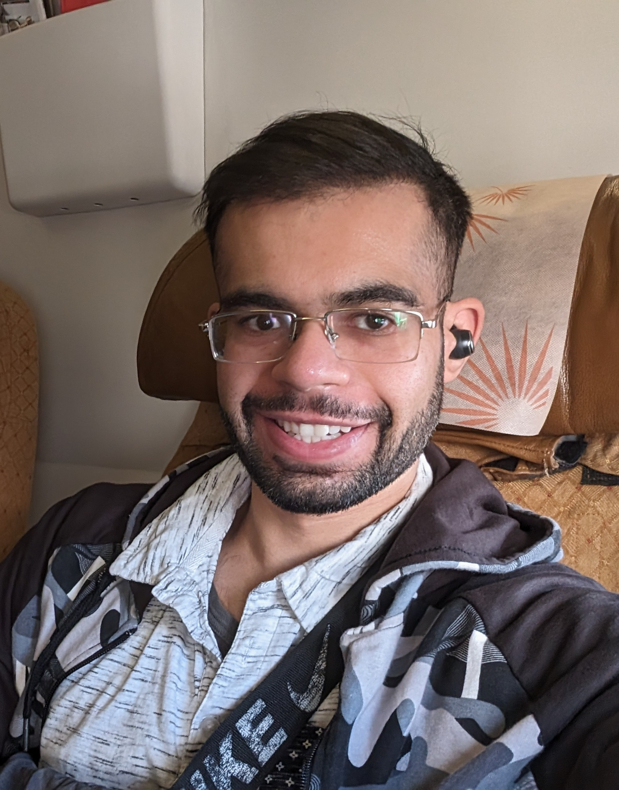

My Resume
Nitish Mulye Resume

Never stop learning. Focus on the effort, not the outcome. Let go.
Contact Information
Hobbies
Education
- Bachelor of Science in Control Engineering, Gujarat Technological University, 2013
- Master of Science in Automation Engineering, University of Duisburg-Essen, 2019
Work Experience
- April 2019, Aumann AG, Chemnitz
- March 2020, Trane Klima- und Kältetechnisches GmbH , Munich
- June 2022, Ferchau Automotive GmbH, Cologne
Skills
- JavaScript
- Python
- HTML & CSS
- C++
Certificate
- Full Stack Web Development Certification, Online Course, 2021
- C++ Development, Udacity, 2023